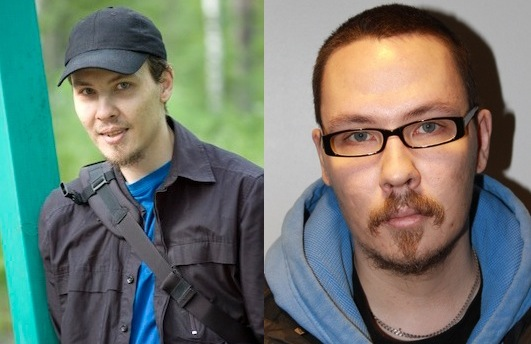

This is mine, Marko Vihoma's personal homepage. On these pages I'll
introduce myself by my hobbies,
studies and got some silly
images & photos and really old
code samples. Here's also my
contact info if you need it.
I was born in 1977 and at the moment i study computer sciences/software
engineering (bachelor's degree as an aim) as my major at the University
of Eastern Finland. I am also on disability pension because of
persistent, treatment resistant deep depression, and also because of,
wtf, delusional disorder XD. On the
other hand I believe, as do others, that I've got a non-treated ADD and
was ADHD as a child which has contributed at least to my depression.
This site was my final work for Savonia University of Applied Sciences
"Making Web Pages" -course and then transformed to a
GroundworkCSS testing
project.